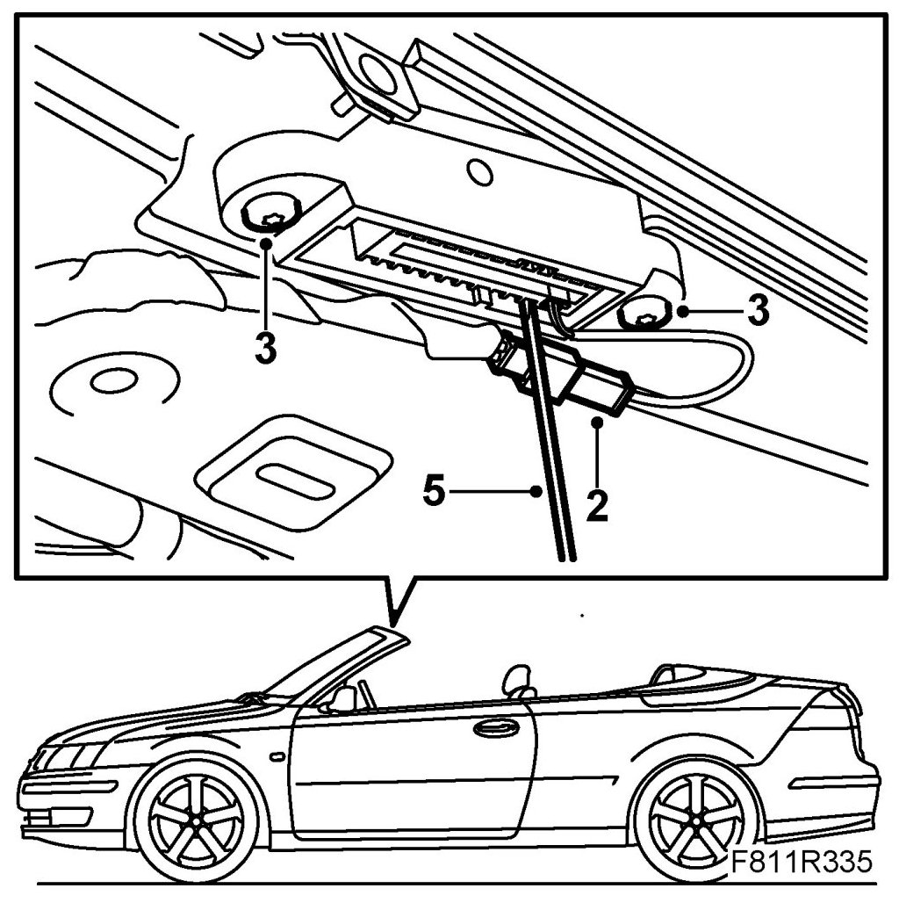
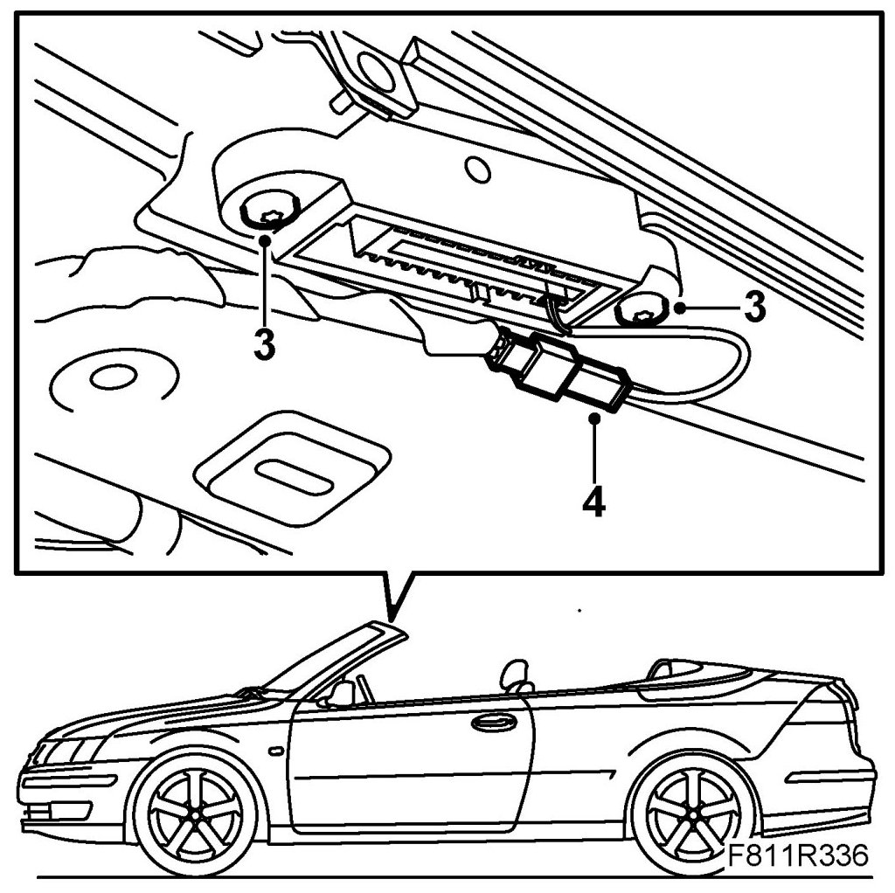

Latch Fittings, Windscreen Frame
Latch Fittings, Windscreen Frame
Removing
1. Remove Windscreen frame upper rim, CV.
2. Left-hand side: Unplug the position sensor connector.

3. Remove the bolts for the latch fitting.
4. Remove the latch fitting.
5. Left-hand side: Remove the position sensor where appropriate by pressing in the lock tab with a screwdriver.
Fitting
1. Left-hand side: Fit the position sensor where appropriate.
2. Put the lock fitting in mounting position.
3. Fit the latch fitting bolts.

4. Left-hand side: Plug in the position sensor connector. Put the sensor in mounting position on the latch fitting and fit it.
5. Test the operation of the soft top.
6. Fit the Windscreen frame upper trim.
7. Close the soft top.
8. Connect the diagnostics tool and erase any diagnostic trouble code.